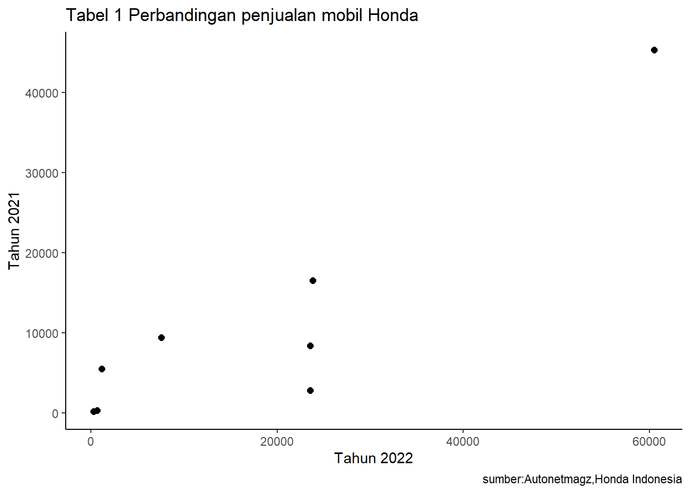

library(tidyverse)
library(readxl)
library("ggplot2")
library("dplyr")Pengaruh Program Diskon PPnBM Pada Penjualan Mobil Merk Honda
Metode Penelitian Politeknik APP Jakarta

1 Pendahuluan
1.1 Latar belakang
Industri otomotif di Indonesia mengalami pertumbuhan signifikan, dan pemerintah mendorongnya melalui Program Piskon PpnBM, memberikan pembebasan bea masuk pada pembelian mobil baru. Fokus penelitian ini adalah menganalisis dampak program tersebut terhadap penjualan mobil Honda, merek yang memiliki posisi kuat di pasar otomotif Indonesia.
Diharapkan analisis terhadap pengaruh Program Diskon PpnBM terhadap penjualan mobil Honda memberikan wawasan penting bagi produsen, distributor, dan pemerintah. Tujuannya adalah merancang kebijakan yang lebih efektif untuk meningkatkan penjualan mobil di pasar otomotif Indonesia. Dengan pemahaman mendalam terhadap preferensi konsumen dan volume penjualan mobil Honda, penelitian ini diharapkan memberikan kontribusi positif pada pengembangan industri otomotif di Indonesia dan membantu pemerintah dalam merancang kebijakan yang mendukung pertumbuhan sektor ini.
1.2 Ruang lingkup
Ruang lingkup pembahasan masalah sesuai dengan variabel yang akan digunakan dalam analisis ini, yakni terkait dengan dampak Program Diskon PPNBM terhadap penjualan mobil Honda. Batasan masalah ini berfungsi untuk membantu mengidentifikasi aspek yang akan dijelaskan dan membatasi cakupan proses yang akan dibahas dalam penelitian ini.
1.3 Rumusan masalah
- Sejauh mana Program Diskon PPNBM berpengaruh terhadap volume penjualan mobil Honda dalam kurun waktu tertentu?
- Bagaimana Program Diskon PPNBM memengaruhi pangsa pasar mobil Honda dan apakah terdapat perbedaan signifikan dalam performa penjualan antara periode sebelum dan setelah penerapan program diskon tersebut?
1.4 Tujuan dan manfaat penelitian
Penelitian ini bertujuan menganalisis dampak Program Diskon PPNBM terhadap penjualan mobil Honda, menilai pengaruhnya terhadap volume penjualan dan pangsa pasar. Manfaatnya mencakup kontribusi bagi industri otomotif, pemerintah, dan konsumen, dengan harapan memberikan dasar untuk pengambilan keputusan strategis dan pemahaman lebih mendalam terkait kebijakan fiskal.
1.5 Package
Packages yang digunakan antara lain sebagai berikut:
2 Studi pustaka
Program Diskon PPnBM telah menjadi strategi pemerintah dalam mendukung industri otomotif di Indonesia. Menurut penelitian oleh Utomo et al. (2021), program ini bertujuan untuk merangsang penjualan mobil dengan memberikan potongan harga pajak penjualan atas barang mewah (PPnBM), khususnya pada merek-merek tertentu.
Menurut Menperin, Agus Gumiwang Kartasasmita, mencatat ekspor produk otomotif, terutama kendaraan roda empat dan komponennya, mencapai Rp29,88 triliun pada Januari-April 2021. Produksi kendaraan roda empat mencapai 413 ribu unit, dengan penjualan wholesales sebesar 320 ribu unit pada Januari-Mei 2021. Untuk mendorong penjualan domestik, pemerintah memberikan relaksasi PPnBM-DTP hingga Desember 2021 untuk kendaraan roda empat dengan mesin hingga 2.500 CC, bertujuan untuk meningkatkan daya saing dan pertumbuhan industri otomotif Indonesia secara global.
3 Metode penelitian
3.1 Data
| Mobil | Penjualan |
|---|---|
| HR-V | 23.859 Unit |
| BR-V | 23.583 unit |
| CR-V | 7.571 unit |
| Brio | 60.532 unit |
| City Hatchback | 23.583 unit |
| Mobilio | 1.151 unit |
| Civic RS | 683 unit |
| Accord | 287 unit |
| Mobil | Penjualan |
|---|---|
| HR-V | 16.525 unit |
| BR-V | 2.764 unit |
| CR-V | 9.378 unit |
| Brio | 45.332 unit |
| City Hatchback | 8.384 unit |
| Mobilio | 5.498 unit |
| Civic RS | 276 unit |
| Accord | 187 unit |
penelitian ini menggunakan data penjualan honda dari artikel Autonetmagz dan honda-indonesia
library("readxl")
dat<-read_excel("penjualan honda.xlsx")
head(dat)# A tibble: 6 × 2
x y
<dbl> <dbl>
1 23859 16525
2 23583 2764
3 7571 9378
4 60532 45332
5 23583 8384
6 1151 5498library("ggplot2")
library("dplyr")
ggplot(data=dat,aes(x=x,y=y))+
geom_point(color="black",size=2)+
labs(title="Tabel 1 Perbandingan penjualan mobil Honda",
x="Tahun 2022",
y="Tahun 2021",
caption="sumber:Autonetmagz,Honda Indonesia")+
theme_classic()
3.2 Metode analisis
Metode yang dipilih adalah regresi univariat atau Ordinary Least Square (OLS) dengan 1 variabel independen. Penelitian ini merbaksud mencari hubungan diskon PPnBM dengan nilai penjualan. Spesifikasi yang dilakukan adalah:
\[ y_{t}=\beta_0 + \beta_1 x_t+\mu_t \] di mana \(y_t\) adalah 2021 dan \(x_t\) adalah 2022.
4 Pembahasan
4.1 Pembahasan masalah
Dengan menerapkan metode Ordinary Least Squares (OLS), analisis ini difokuskan pada dampak Program Diskon PPnBM terhadap penjualan mobil merek Honda. Data penjualan tersebut telah digabungkan untuk melakukan regresi, dan hasilnya dapat disajikan dalam bentuk berikut.
4.2 Analisis masalah
Hasil regresinya adalah
library("readxl")
dat<-read_excel("penjualan honda.xlsx")
head(dat)# A tibble: 6 × 2
x y
<dbl> <dbl>
1 23859 16525
2 23583 2764
3 7571 9378
4 60532 45332
5 23583 8384
6 1151 5498reg1<-lm(y~x,data=dat)
summary(reg1)
Call:
lm(formula = y ~ x, data = dat)
Residuals:
Min 1Q Median 3Q Max
-12186.1 -1325.0 993.5 5071.3 6024.4
Coefficients:
Estimate Std. Error t value Pr(>|t|)
(Intercept) -596.2456 3312.5942 -0.180 0.86308
x 0.6592 0.1274 5.173 0.00207 **
---
Signif. codes: 0 '***' 0.001 '**' 0.01 '*' 0.05 '.' 0.1 ' ' 1
Residual standard error: 6876 on 6 degrees of freedom
Multiple R-squared: 0.8168, Adjusted R-squared: 0.7863
F-statistic: 26.76 on 1 and 6 DF, p-value: 0.002069Berdasarkan output ini, model regresi linear memiliki tingkat signifikansi yang tinggi secara statistik, dan variabel ‘x’ memiliki pengaruh yang signifikan terhadap variabel respons ‘y’.
5 Kesimpulan
Model regresi linear yang telah dilakukan menunjukkan bahwa Program Diskon PPNBM memiliki pengaruh yang signifikan terhadap volume penjualan mobil Honda. Koefisien regresi positif (0.6592) menandakan bahwa peningkatan program diskon PPNBM berkorelasi positif dengan peningkatan volume penjualan mobil Honda. Dengan demikian, dapat disimpulkan bahwa Program Diskon PPNBM memiliki dampak yang nyata terhadap penjualan mobil Honda dalam kurun waktu tertentu.
6 Referensi
FACHRULRAZI, A. (2021). Menperin: Relaksasi PPnBM Buka Jalan Pemulihan Otomotif Nasional. Autonetmagz. https://autonetmagz.com/menperin-relaksasi-ppnbm-buka-jalan-pemulihan-otomotif-nasional/101787/ FACHRULRAZI, A. (2023). Ini dia Total Angka Penjualan Honda Sepanjang 2022! Autonetmagz. https://autonetmagz.com/ini-dia-total-angka-penjualan-honda-sepanjang-2022/114244/ Indonesia, H. (2022). AKHIRI TAHUN 2021, HONDA CATAT PENINGKATAN PENJUALAN DIBANDINGKAN PERIODE YANG SAMA TAHUN LALU. Honda-Indonesia. https://www.honda-indonesia.com/news/akhiri-tahun-2021-honda-catat-peningkatan-penjualan-dibandingkan-periode-yang-sama-tahun-lalu#:~:text=News-,Akhiri%20Tahun%202021%2C%20Honda%20Catat%20Peningkatan%20Penjualan,Periode%20yang%20Sama%20Tahun%20Lalu&text=Jakarta%2C%2014%20Januari%202021%20%E2%80%93%20Sepanjang,yang%20tercatat%20sebesar%2079.451%20unit. Maulida, R. (2022). Diskon PPnBM Mobil 2022: Perhatikan Ketentuannya Berikut ini! Online Pajak. https://www.online-pajak.com/tentang-pajak-pribadi/diskon-ppn-mobil-2022